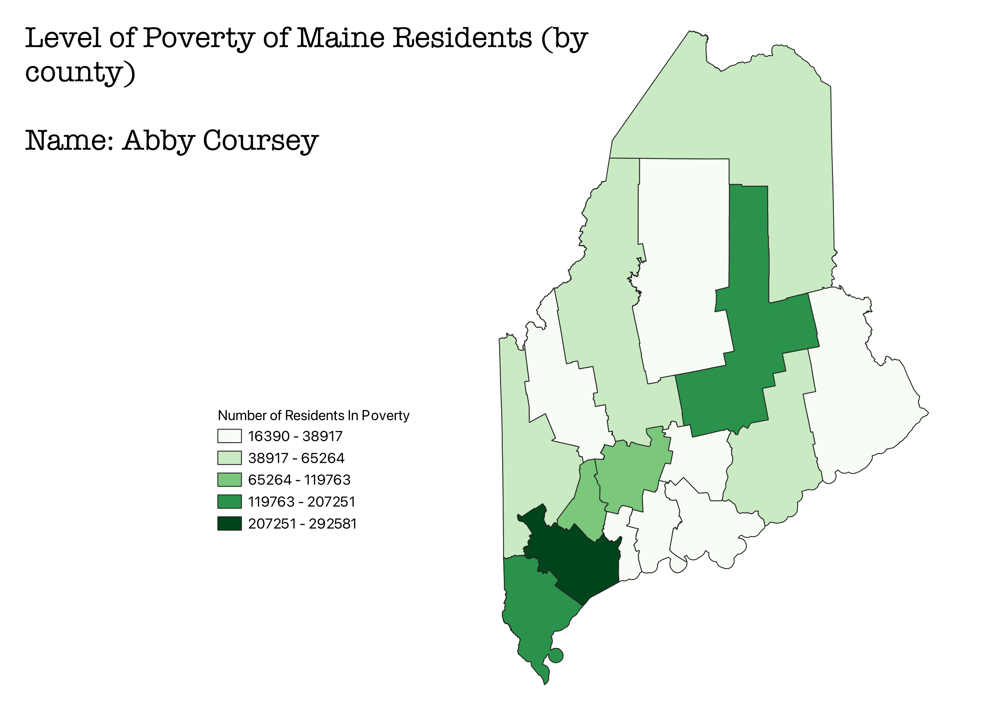
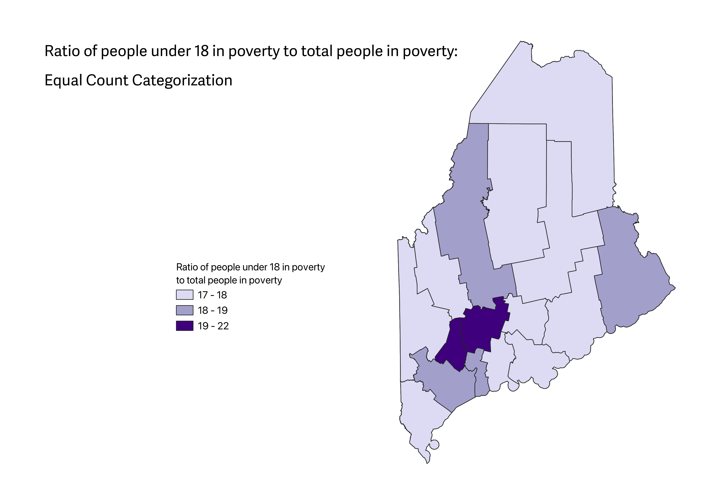
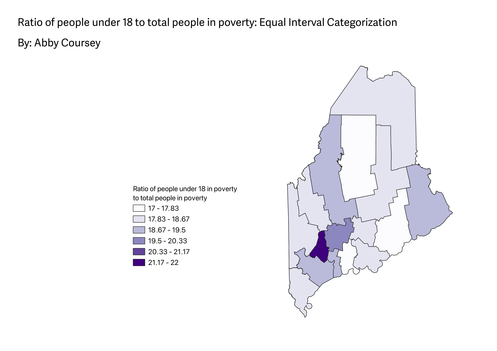
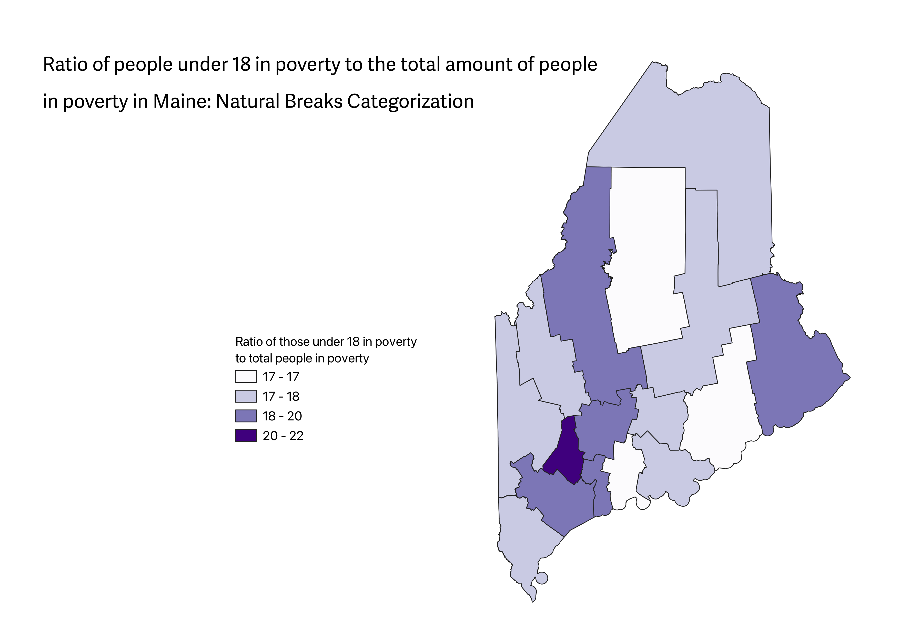

Homework 6: Census Data Choropleth
Abby Coursey
My data came from the US Census website. I used the advanced search and applied the filters
for all counties in Maine with the topic of 'Income and Poverty'.
The CSV file contained data about the poverty status for residents in Maine in the last 12 months (for 2022).

Data used for this project
CSV dataset
Link to GeoJSON
Homework 6.2: Census Data Ratios and Categories
The ratio I created was the proportion of people under 18 in poverty in Maine to the total amount of people in poverty in Maine.
I chose this ratio because the under 18 data was the next data provided in the censes data that I used in the last homework.

This map shows the ratio in the equal count categorization. A pro of this version is that it generally will have an equal number of each color,
making the distrubution of data easier to understand. A con is that in maps like mine, where there is small intervals for data, it is not a very large distirbution or aesthetically pleasing.

This map shows the ratio in the equal interval categorization. A pro of this classification is that it is best used in data that has a uniform distirbution because it will acurately represent it.
It is also easy to understand. A con is that it can make it diffuclt to interpret detailed data due to the equal intervals.

This map shows the ratio in the Natural Breaks Categorization. A pro of this classification is that it can accurately represent skewed data because it looks for the 'natural' breaks and clusters in the data.
A con is that it is not the best version to use for data that has little variation since it is specifically targeting the overall differences in the data.